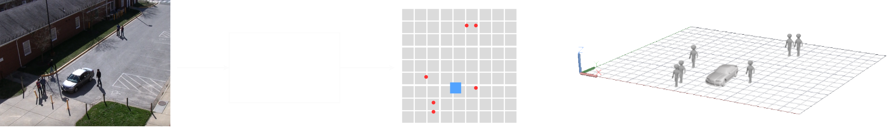
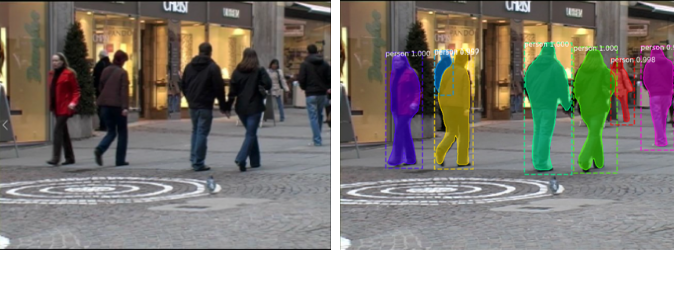
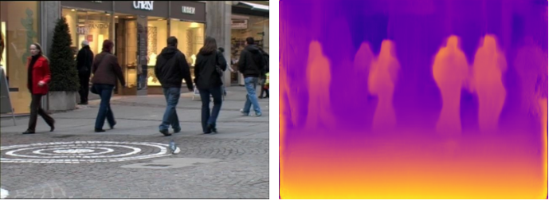
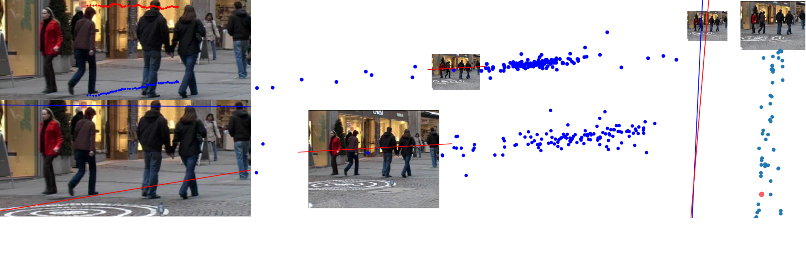

Transfer Learning for Question
Generation from Knowledge
Graphs
A thesis project by Stan Lochtenberg
Supervisor: Frank Nack
External supervisor: Bas Niesink
Thesis project submitted in fulfillment of the requirements for the degree of:
MSc Artificial Intelligence programme
What are knowledge graphs?
During these last years, the presence of video cameras in public spaces has widely increased,
due to the cost reduction and quality increase of technologies such as CCTV and surveillance systems.
Their ubiquity has raised a common concern about privacy, and about how individuals could keep
control over their own personal information in these scenarios.
So, we need training data!
As a result, a general consensus has been reached: a trade-off between security and privacy is needed.
In Europe, the GDPR (or General Data Protection Regulation) has been approved, with the goal of
protecting citizens’ right to privacy. These regulations forbid private entities and institutions
to store these kinds of video recordings in the long term, unless it can be guaranteed
that the videos have been completely anonymized.
How can we automatically generate questions to create training data?
Previous research
To be able to answer the question above, we first had to ask ourselves the following:
How can we information from graphs in natural language?
The GDPR defines personal data as any kind of information that can lead to the identification of an individual,
on its own or in combination with other data. There are several personal identifiers that could be found in a video or
image, which are typically
classified among three types: biometric (faces, gait), soft biometric (body silhouette,
approximate age, gender, height, weight), and non-biometric (clothing, hairstyle, license plates, vehicle models).
Considering the kind of scenario that can be found in the surroundings of the Paaspop festival, or in a general outdoors street scene,
6 different classes of objects were defined as potentially sensitive:
people, and several vehicles that could be linked to their drivers' or riders' identities
(cars, bicycles, motorcycles, trucks and buses).
To automatically find them and locate them, an object detection algorithm is needed. Three well-known state-of-the-art detectors
are Mask R-CNN
(which proposes several regions in an image that could potentially contain objects, to later classify them and segment them),
YOLOv3 and RetinaNet
(both of which perform both region division and classification together). YOLOv3 enables real-time application, but Mask R-CNN offers a higher accuracy.
RetinaNet was created with the purpose of combining real-time execution with a higher accuracy. Although RetinaNet outperforms both YOLOv3 and Mask R-CNN in
identical conditions, Mask R-CNN is the only method that performs object segmentation.
Proposed method
Instead of following the general approach of manipulating the original video frame images,
our proposed method aims at estimating the locations of the relevant
objects (people and vehicles) within the scene in the 3D space, at each frame.
These estimated locations can be used, for instance, to recreate the scene in a 3D animation,
where all the objects of the same type are represented using an identical default 3D model.
This way, only the position and motion information is preserved, guaranteeing the anonymity of
the recreated scene while also providing sufficient information of the original scene for further analysis.

To achieve this, we make use of the following techniques and tools:
Object detection: Mask R-CNN
... to find and locate all the objects of interest to us: people, and certain vehicles
(cars, motorcycles, bicycles, buses and trucks).
Mask R-CNN
proposes regions in an image with a high chance of containing a certain object. Once it is confident that
there is an object in a certain region, it classifies it and adjusts the region contour for a more precise
localization of the object. It also performs
object segmentation, indicating which pixels actually belong to each object.
Object tracking: DeepSORT
... to identify all the objects throughout the video sequence, by associating the
detected objects to themselves in subsequent frames. DeepSORT is able to perform this association
based on both motion assumptions (such as expected positions or speed) and on appearance similarity. Object tracking helps
filter out potentially false positive detections (e.g. if an object was not found in any other frame) and smooth object trajectories:
for instance, if an object is fully occluded at some point, its missing 3D location could be interpolated based
on its previous and future estimated locations.
Depth estimation: MonoDepth
... to infer the distance to the camera of every 2D image point or pixel, within each video frame.
MonoDepth
does this by predicting how the paired image to the input image would look like in a stereo camera setup (that is, a 3D camera).
From these images, it outputs a disparity map, which indicates the displacement of each 2D point relative to itself
in the other image. If we know certain camera parameters, we can compute depth from the disparity map by using geometry
and the concept of triangle similarity.
Camera self-calibration: estimation of vanishing points
... to estimate the camera parameters we need to convert 2D images to 3D, directly from the recorded video sequence.
As our goal is to make the method transparent to the user's input, we do not know -or have access to- the camera that was used to record
the video. Based on a modified version of this method, we compute the
camera parameters from vanishing points (image points where parallel lines in the real world intersect). We find candidate vanishing points by locating the head and feet of
a certain tracked person (whose height is assumed to be constant) and intersecting head-to-head, feet-to-feet and head-to-feet lines.
3D reconstruction: epipolar geometry
... to calculate the 3D world coordinates of every 2D image point, once the depth components and the camera
parameters have been estimated. Epipolar geometry models the geometry of stereo cameras, and establishes the relationships
and constraints among 3D points and their projections on a 2D image. Similarly to how depth was computed based on the disparity maps,
the remaining coordinates can be calculated. For each object, we select a group of points from its center area, and average
their 3D coordinates to obtain an estimate of the objects' locations on the ground plane.
3D animation: Unity
... to generate an alternative version of the video, by means of a 3D animation where objects are represented
with default 3D models depending on their object class. As a proof-of-concept, we integrated our final output (objects'
locations on the ground plane) in a 3D environment created with the Unity game engine.
Results
For
demonstration and evaluation purposes, we make use of this video sequence named TUD-Stadtmitte. It was
taken from the MOT Challenge
tracking benchmark. It contains ground truth annotations of the 3D locations of the objects
throughout the video, which were captured thanks to a multiple-camera setup.
Object detection

Mask R-CNN displays a highly accurate detection of the people in TUD-Stadtmitte,
with high levels of confidence, and a reliable detection and segmentation even with severe occlusions.
Mask R-CNN gives a mean average precision of 20.1%
when evaluated on the Cityscapes dataset,
considering our 6 selected object classes only. Although this value is significantly lower than its theoretical mean
average precision, Mask R-CNN still provides a state-of-the-art performance, specifically for our objects of interest and in a
setting similar to our expected ones (outdoors street scene, displaying people and vehicles), such as the ones
shown in Cityscapes.
Object tracking
DeepSORT provides a fairly robust tracking
of the detected objects, and a relatively consistent assignment of the object IDs, with a low number of identity switches.
Even when objects are fully occluded and disappear from the frame, they are mostly correctly identified afterwards.
When evaluating the final output of the system, the usage of tracking increased the overall accuracy by 15% on the test
setting as opposed to when tracking was not used.
Depth estimation
MonoDepth was trained on
several datasets and combinations of them, with data mainly obtained from Cityscapes. We evaluated it on the
KITTI dataset, similar to Cityscapes in terms of viewpoint and scene content. We obtained relatively
low error rates, with a root-mean-square error of 4.58.
However, when we analyzed its performance on videos that visibly differed from the training data
(particularly in viewpoint and camera height),
the depth maps presented several artifacts, added to the lack of temporal consistency of the method.
Both the objects and the background showed
incongruities in their depth maps. Particularly, the areas belonging to objects labeled
as person yielded larger errors, with a root-mean-square error that doubled its value compared to
when the areas belonging to all relevant objects were considered
Camera self-calibration
Despite the simplifications
done to the original method in aspects like optimization, we were also able to include certain improvements, such as
the direct usage of the detected objects and their segmentation masks obtained with Mask R-CNN. These masks provided us
with more accurate locations of the head and feet of the reference person, ultimately obtaining more reliable candidate
vanishing points.
Due to the actual nature of the method, nevertheless, the results were highly influenced by the adequacy of the selected
reference person. If this person moved around the scene along the 3 axes, the candidate vanishing points provided a better
overview of the 3D space, yielding more perceptually accurate horizon lines.

3D reconstruction
Finally, we obtained the estimated locations
of the objects over the ground plane, by applying epipolar geometry using the depth maps of each of the video frames,
and the camera parameters obtained through the self-calibration process. We visualize them on a 2D plot that represents
the ground plane. Each point in the plot corresponds to an object, and the legend indicates the object class corresponding
to each of these estimated objects, based on a color code.
While the presence of the objects and the directionality of their movement is preserved, it is noticeable how the
large outliers in the estimated depth component (y-axis) affects the final output, causing a drastic flickering along
this axis. This flickering is even stronger when the objects reach the sides of the image, to either enter or leave the frame.
This situation is also captured when making use of multi-object tracking metrics. An accuracy of 60% is obtained but
at the cost of a distance precision of 1.6 meters over the ground plane. When only the x-axis is taken into account,
without considering the depth component, this accuracy raises until 70% with a much better precision of 0.45 meters.
3D animation
Once we have estimated the locations of the objects on the ground plane, we can generate the trajectories to animate
default 3D models within a 3D environment, in a 3D graphics engine or a game engine.
As a proof-of-concept, we make use of our estimated object locations for the TUD-Stadtmitte sequence
to animate 3D person models in a basic environment in Unity:
Future work
Currently, the main limitation of the method is the low accuracy and reliability of the depth estimation process.
For future versions or continuation of this research, there are certain improvements that could be made.
First, if the intention of anonymizing a video is...
... known prior to its recording:
Make use of a multi-camera or stereo camera setup, an RGBD (depth) camera,
or additional sensors, for a more straightforward
and reliable depth estimation.
If several cameras are available, 3D tracking (directly on the ground plane) could also be performed.
... not known, or decided after its recording:
Improve the depth estimation process, for instance by using a customized training dataset, with more and more varied
data (such as with different viewpoints and camera angles).
Make use of an alternative depth estimation method, that ideally also takes the time domain into account.
In addition, the object tracking algorithm that was used is an online technique, meaning that it only sees the previous
frames of the video and not future frames. Regardless of the prior knowledge (or lack thereof) of the intention to anonymize
a video,
the object tracking algorithm could be improved or substituted. As real-time execution is not needed in principle,
an online tracker could be used, with looks through all the frames
in the video from the beginning, for a more consistent object identification; or a tracker
based on the association of segmentation masks, instead of the detection boxes, further exploiting the features of the
Mask R-CNN detector.
In the media
Our project has been featured in the following conferences and events:
Global AI Night @ Microsoft NL
The Global AI Night is a free evening event organized by 94 communities all over the world that
are passionate about artificial intelligence applied to real world cases.
Our project was featured as one of the 4 sessions during the last Fall edition (05/09/19) in Amsterdam,
hosted by Microsoft Nederland.
The Info Support Knowledge Nights are weekly events where Info Support colleages give
1-hour lectures on current developments with regard to IT products and technologies.
The Info Support Research Demo Day is an open event where the Research Center of the company is introduced,
and insight is given on some of the most relevant research that has been conducted lately.
The Paaspop Skyclub is the business-to-business platform within the festival where different networking activities
and meetings take place, to facilitate inspiration and connections among local and national companies.